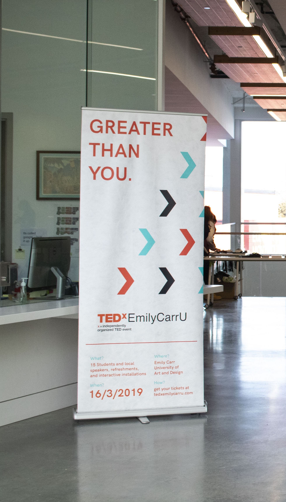
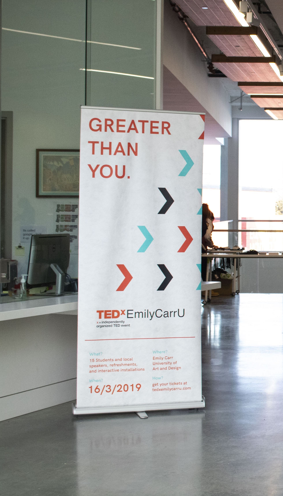

Overview
I lead a small design team responsible for creating the visual identity
for the 2019 TEDx event at Emily Carr University of Art and Design.
The identity was based on the event's theme; Greater Than You.
Team
Arjun Menon: Design Lead, Motion Design
Rebecca Lo: Attendee badges
Sophia Cho: Program Guide
Vivian Chen: Website
Cindy Nachareun: Signage + Interactive Installations
Process: Managing dreams and reality was a big challenge. With the small team we had and limited time commitment, the amount of graphic assets would have to be limited in order to create a cohesive visual identity. The most top most priority was to design and finalize the visual identity guidelines. This was a collaborative process where team members brought in sketches and ideas which we then brought together elements of each perspective in a cohesive identity. We made sure to keep in mind the event theme and vision, and all it participants. With multiple designed touchpoints for the event, the responsibilities were split between the design team.
Big Decisions:
I came into the position as the design lead to help guide a direction
with the logo. I decided to not have a separate logo for the theme and
simply have the symbol to represent the theme.
Wins:
simplifying the design assets, making things cohesive.
Losses:
Not enough collaboration between teams (interactive exhibition team,
short animation team)

 



Takeaways
Designing an event visual identity was an overall fun experience. What was challenging for me
was learning and applying the role of design lead. With a small team and limited time commitment from
everyone, finding ways to collaborate, prioritize, and share design responsiblities was challenging
to do in a way that keeps the design outcomes clean and cohesive.